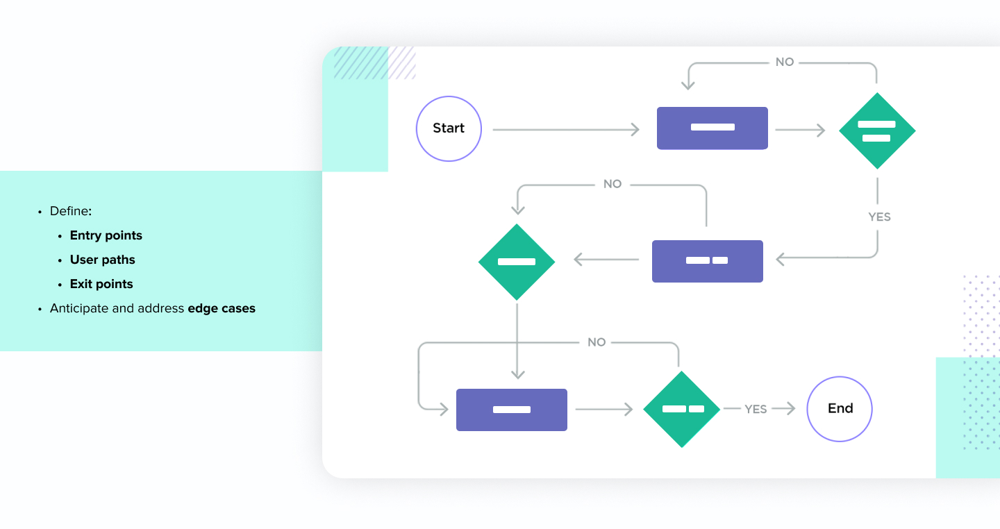

Bonsai is a SaaS platform tailored for self-employed individuals and freelancers, offering essential tools for managing their business operations efficiently. With an aim to streamline the process of creating proposals and invoices, the decision was made to introduce a Service Library feature within the platform.
Objective: The primary goal of the Service Library feature is to provide users with pre-defined service templates, enabling them to quickly access pricing references and add them to their service libraries. This feature aims to enhance user experience by simplifying workflow and saving time on repetitive tasks.
Research & Discovery: Our investigation, primarily through user interactions in CONFLUX, revealed a crucial need among Bonsai's users. They lacked a straightforward method to add service items to invoices and proposals, often struggling due to the absence of pricing references. Thus, there was a clear demand for pricing templates within Bonsai to simplify their workflow and boost productivity.
Competitive Analysis
Performing a competitive analysis across various apps, from Google Docs' template library to FreshBooks, QuickBooks, and HoneyBook, revealed insights into diverse approaches to similar features. Despite the challenge of finding widely available options, this examination provided valuable insights into the best practices and potential areas for innovation in implementing a template library feature.
User Flow
the user flow was vital for planning how users interact with the template library feature. It helped us understand freelancers' needs and design a seamless experience tailored to their workflow, boosting usability and adoption.
Exploring Possibilities: We used wireframes to sketch out different design ideas for the template library, allowing us to brainstorm and innovate.
Design Patterns and Feasibility: Collaborating with engineers, we assessed the feasibility of our designs and chose the best options that fit within Bonsai's framework.
Options for User Feedback: We then shared these wireframes with users to gather feedback, ensuring the final design met their needs and preferences.
Engaging Power Users: We shared our wireframes on Slack within a dedicated "Power Users Channel" to solicit feedback from our most active and engaged users.
Feature Preferences Feedback from our power users highlighted a preference for a text-based layout over a thumbnail-based one. They expressed a desire for features such as subcategories, filtering options, and the ability to create custom templates directly from the gallery interface.
Clear Communication: As we handed off the designs to the developers, we made sure to include detailed notes about all the different situations our design needed to handle, like when something unexpected happens or when a user interacts with it.
Facilitating Implementation: These notes helped the developers understand exactly how the design should behave in different situations, making it easier for them to turn our designs into a real feature.
Streamlining Collaboration: By being clear about these edge cases and statuses from the start, we avoided confusion and made it easier for everyone to work together. This sped up the process and ensured our designs were built just the way we envisioned them.
Increased Usage: Following the release of the new feature, we observed a notable uptick in usage metrics, indicating positive reception and adoption among our user base.
Product Marketing Impact: Product marketing further bolstered awareness by sending out an email announcement highlighting the release of the new feature. This communication also served as an opportunity to solicit feedback, generating valuable insights from our users.
User Satisfaction: Feedback received through the email communication was very positive, with many users expressing satisfaction at the seamless integration of the feature into their workflow. This validation from our user community reaffirms the value and impact of our design efforts in enhancing the Bonsai user experience.